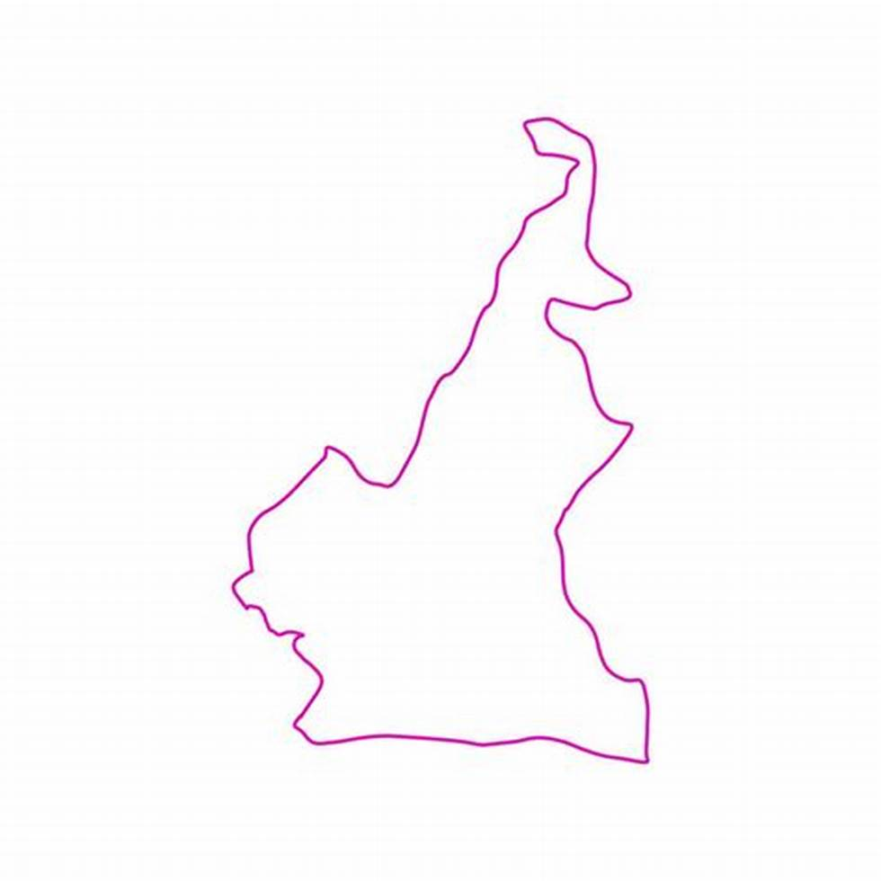

<section class="">
    <div class="message h6 d-flex flex-column justify-content-center align-items-center">
        
       <div>
        <span class="h5 p-2">ARCHIVEX  </span> une platteforme d'accessibilité aux archives du ministère des relations extérieures du Cameroun
       </div>
    </div>
</section>